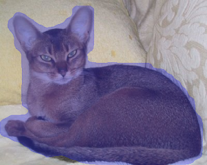

Detectron2 is a platform for object detection, segmentation and other visual recognition tasks. Custom docker images for instance segmentation with additional tools are available from here:
https://github.com/waikato-datamining/pytorch/tree/master/detectron2
Prerequisites
Make sure you have the directory structure created as outlined in the Prerequisites.
Data
In this example, we will use the Oxford Pets dataset, which consists of 37 different categories of cats and dogs.
Download the dataset from the following URL into the data directory and extract it:
https://datasets.cms.waikato.ac.nz/ufdl/data/oxford-pets/oxford-pets-adams.zip
Rename the adams directory to pets-adams.
To speed up training, we only use two labels: cat:abyssinian and dog:yorkshire_terrier.
The label filtering and splitting it into train, validation and test subsets is done
using wai.annotations:
docker run -u $(id -u):$(id -g) \
-v `pwd`:/workspace \
-t waikatoufdl/wai.annotations:latest \
wai-annotations convert \
from-adams-od \
-i "/workspace/data/pets-adams/*.report" \
filter-labels \
--labels cat:abyssinian dog:yorkshire_terrier \
discard-negatives \
coerce-mask \
to-coco-od \
-o /workspace/data/pets2-coco-split/annotations.json \
--sort-categories \
--category-output-file labels.txt \
--split-names train val test \
--split-ratios 70 15 15
Training
For training, we will use the following docker image:
waikatodatamining/detectron2:0.6
The training script is called d2_train_coco, for which we can invoke the help screen as follows:
docker run -t waikatodatamining/detectron2:0.6 d2_train_coco --help
It is good practice creating a separate sub-directory for each training run, with a directory name that hints at
what dataset and model were used. So for our first training run, which will use mainly default parameters, we will
create the following directory in the output folder:
pets2-d2-maskrcnn
Before we can train, we will need to obtain and customize a config file. Within the container, you can find example configurations for various architectures in the following directory:
/opt/detectron2/configs/COCO-InstanceSegmentation
Using the d2_dump_config command, we can expand and dump one of these configurations for our
own purposes:
docker run \
-u $(id -u):$(id -g) \
--gpus=all \
-v `pwd`:/workspace \
-v `pwd`/cache:/.cache \
-v `pwd`/cache/torch:/.cache/torch \
-t waikatodatamining/detectron2:0.6 \
d2_dump_config \
--config_in /opt/detectron2/configs/COCO-InstanceSegmentation/mask_rcnn_R_50_FPN_1x.yaml \
--num_classes 2 \
--output_dir /workspace/output/pets2-d2-maskrcnn \
--config_out /workspace/output/pets2-d2-maskrcnn/mask_rcnn_R_50_FPN_1x.yaml
Edit the mask_rcnn_R_50_FPN_1x.yaml file and change the following values (IMS_PER_BATCH is reduced to fit
in your GPU's memory, the others to limit training time):
SOLVER:
IMS_PER_BATCH: 4
MAX_ITER: 15000
STEPS:
- 5000
- 10000
Kick off the training with the following command:
docker run \
-u $(id -u):$(id -g) \
--shm-size 8G \
--gpus=all \
-v `pwd`:/workspace \
-v `pwd`/cache:/.cache \
-v `pwd`/cache/torch:/.cache/torch \
-v `pwd`/cache/iopath_cache:/tmp/iopath_cache \
-t waikatodatamining/detectron2:0.6 \
d2_train_coco \
--config /workspace/output/pets2-d2-maskrcnn/mask_rcnn_R_50_FPN_1x.yaml \
--train_annotations /workspace/data/pets2-coco-split/train/annotations.json \
--train_images /workspace/data/pets2-coco-split/train/ \
--test_annotations /workspace/data/pets2-coco-split/val/annotations.json \
--test_images /workspace/data/pets2-coco-split/val/ \
--labels /workspace/data/pets2-coco-split/train/labels.txt \
--output_dir /workspace/output/pets2-d2-maskrcnn
Predicting
Using the d2_predict script, we can batch-process images placed in the predictions/in directory
as follows (e.g., from our test subset):
docker run \
-u $(id -u):$(id -g) \
--shm-size 8G \
--gpus=all \
-v `pwd`:/workspace \
-v `pwd`/cache:/.cache \
-v `pwd`/cache/torch:/.cache/torch \
-v `pwd`/cache/iopath_cache:/tmp/iopath_cache \
-t waikatodatamining/detectron2:0.6 \
d2_predict \
--model /workspace/output/pets2-d2-maskrcnn/model_final.pth \
--config /workspace/output/pets2-d2-maskrcnn/mask_rcnn_R_50_FPN_1x.yaml \
--labels /workspace/data/pets2-coco-split/train/labels.txt \
--prediction_in /workspace/predictions/in \
--prediction_out /workspace/predictions/out
Notes
- The predictions are in ROI CSV format
Example prediction
